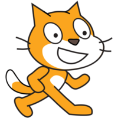

Movimentos
Mover para esquerda
Mover para direita
Mover para cima
Mover para baixo
Girar em sentido Horário
Girar em sentido AntiHorário
Deslizar para Direita
Deslizar para Esquerda
Aponte para direção
Ir para a direção
Ir para posição aleatória
Deslizar até a posição aleatória
seguir o mouse
Voltar ao início
Dizer "olá" por "n" segundo(s)
Trocar o avatar
Resetar o avatar
Trocar cenário
"Resetar" o cenário
Diminuir o avatar
Aumentar o avatar
Esconder o avatar
Mostrar o avatar
Tocar o som
Parar som
Aumentar volume
Diminuir volume
Quantidade de pixel(s)
